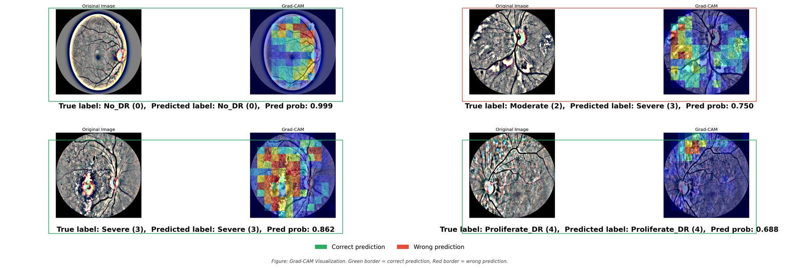

Understand your AI. Correct it. Trust it.
Inverse AI shows why an AI model made a decision, lets you fix its behaviour without retraining, and keeps checking that it stays fixed. It builds on published research in medical imaging and machine-learning operations, and ongoing doctoral research on language models.
Models answer. They rarely show their work, and they are hard to correct.
AI now grades medical images, drafts decisions, and talks to customers. The people accountable for those systems still can’t easily see why a model decided, change what it does, or prove that it keeps behaving.
Explanations nobody checks
A heatmap looks like an answer. Whether it points at the evidence, or at the dark corner of an image, is rarely measured.
Fixes that mean retraining
Changing behaviour usually means new data and another training run. Runtime steering is faster, but its gains are seldom tested against strong alternatives, or costed.
Rules that now expect both
The EU AI Act and national frameworks expect transparency and human oversight for high-risk AI. Teams need evidence, not just dashboards.
Three layers. Each one starts from research.
Inverse AI is pre-product. Every layer below is grounded in work that is published or under way, and each card says which.
Inspect
Explanations you can check.
Attribution maps are scored against where the evidence should be, so a highlighted region has to earn the decision it claims to explain.
Intervene
Change behaviour without retraining.
Representation steering for language and vision-language models, written up the same way every time and held against strong baselines and its own cost.
Monitor
Keep the evidence in production.
Continuous automation for models: versioned pipelines, drift and fairness checks, and an audit trail that follows every deployment.
Did the model look at the retina?
A model can grade a fundus photograph for diabetic retinopathy in a moment. Our study asks the clinician’s question: did the explanation stay on the retina, and did it support the grade?
A research study, not a screening device.

One loop, from a single decision to evidence.
The same discipline applies to an eye scan, a chatbot answer, or a document read by a vision-language model.
- Decide
- Explain
- Check
- Intervene
- Verify
- Monitor

Saeed Thabit
Founder, Inverse AI · Doctoral researcher, United Arab Emirates University
Saeed’s research asks when an AI explanation, or an intervention, can be trusted, from retinal photographs to large language and vision-language models.
He brings 14 years of leading engineering teams and architecting cloud-native and enterprise systems for government and private-sector organisations in the UAE. His published work also spans automating machine-learning delivery with DevOps practice, sentiment analysis of social media, and emotion analysis across text and other modalities.
Building the trust layer for AI, from the UAE.
We’re speaking with investors, clinical and industry partners, and research collaborators.